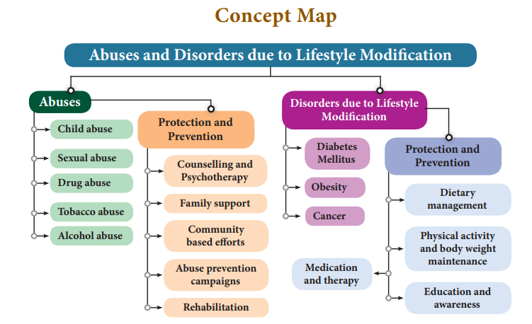
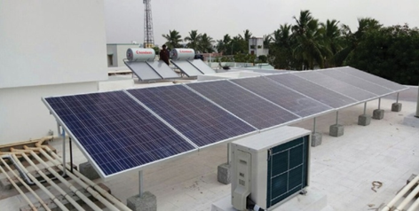
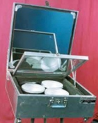
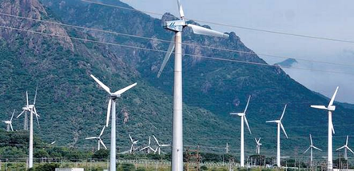
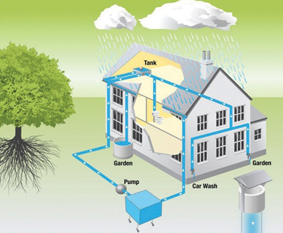
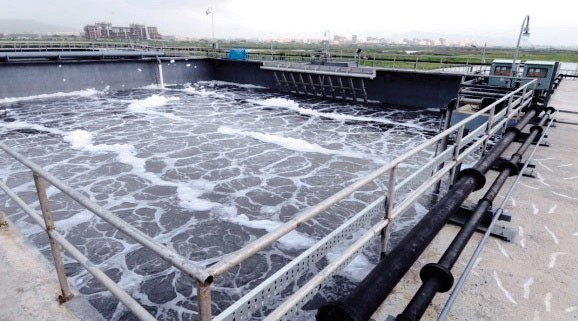
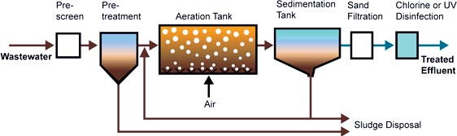
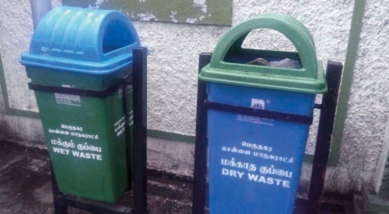
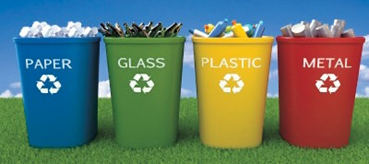

+
In each of the following questions, a statement of Assertion is given and a corresponding statement of Reason is given just below it. Of statements given below mark the correct answer as
Reason: Drugs disturb the functioning of the body and mind.
Reason: Pancreas is unable to produce sufficient quantity of insulin.
REFERENCE BOOKS
1. Edward P Sarafino and Timothy W. Smith. 2012, Health Psychology, International Student Version - 7th Edition, Wiley India (P) Ltd, New Delhi.
2. Srilakshmi, B. Dietetics, 2014, 7th Multicolor Edition, New Age International Publishers, New Delhi.
3. Sathyanarayana U. Biochemistry – Revised Edition, Books and (P) Ltd, Kolkata.
INTERNET RESOURCES
https://www. ross and wilson.com / lecturers
https://www.elsevier health.com

At the end of this lesson the students will be able to:
Environmental management deals with the different aspects of environment, its structure, function, its quality and its maintenance including conservation of its living and non-living components. The diversified natural resources on this earth provide the necessities for survival of all forms of life including man. Everything that comes from nature has some utility for man but its utilization is possible based on the availability of appropriate technology.
Resources can be renewed simultaneously along with their exploitation (forests, crops, wildlife, groundwater, wind and solar energy). They can maintain themselves by natural recycling or can be replenished by proper management. Simultaneously, non- renewable resources cannot be recycled and can get exhausted by unlimited and continuous use (mineral ores, coal, petroleum etc). They cannot be replaced easily. This would lead to a situation where non-renewable resources may come to an end after a certain period of time.
Expanding human population resulted in expanding needs of man. With scientific and technological advancement man started utilizing natural resources at a much larger scale. Continuous increase in population caused an increased demand for resources. Therefore, conservation of natural resources makes important contributions to the social and economic development of the country.
Natural resources are conserved for their biological, economic and recreational values. The use of natural resources in excess and unplanned way leads to imbalance in the environment. A judicious balance should be maintained between exploitation of resources and its replenishment. Proper utilization and management of nature and its resources is termed as conservation.
We have to build a sustainable world, which should last forever. Some of the ways to sustain continuous use of resources are practices to utilise energy efficiently, avoid wastage of water, avoid usage of plastics and other non- biodegradable materials and to take care for the environment we live. It is important that we manage and use our resources carefully so as to preserve for the future generations.
Forests are an important component of our environment and are dominated by microorganisms, flowering plants, shrubs, climbers, dense trees and provide a vast habitat for wild animals. Forests also contribute to the economic development of our country. Forests are vital for human life; it is a source for a wide range of renewable natural resource. They provide wood, food, fodder, fibre and medicine.
Forests are major factor of environmental concern. They act as carbon sink, regulate climatic conditions, increase rainfall, reduce global warming, prevent natural hazards like flood and landslides, protect wildlife and also act as catchments for water conservation. They also play a vital role in maintaining the ecological balance.
Deforestation is the destruction of large area of forests. This happens for many reasons like intensive agriculture, urbanization, construction of dams, roads, buildings and industries, hydroelectric projects, forest fires, construction of mountain and forest roads. It is a threat to the economy, quality of life and future of the environment. India is losing about 1.5 million hectares of forest cover every year.
More to Know
Chipko movement
The Chipko movement was a non-violent agitation in 1973 that was aimed at protection and conservation of trees. The name of the movement ‘Chipko’ comes from the word ’embrace’, as the villagers hugged the trees and encircled them to prevent them from being cut. The movement originated in the Chamoli district of Uttar Pradesh (now Uttarakhand). The protest of Chipko movement achieved a major victory in 1980 with a 15-year ban on cutting trees in the Himalayan forests.
Effects of Deforestation
Deforestation gives rise to ecological problems like floods, drought, soil erosion, loss of wild life, extinction of species, imbalance of biogeochemical cycles, alteration of climatic conditions and desertification.
India has an area of 752.3 lakh hectare classified as reserved forests and 215.1 lakh hectare as protected forests. The important measures taken for conservation of forests are as follows
Afforestation: Activities for afforestation programme (Van Mahotsav) includes planting and protecting trees with multiple uses which help in restoration of green cover. Destruction of trees should be curtailed.
Social forestry programme: It should be undertaken on a large scale with active participation of the public and utilization of common land to produce firewood, fodder and timber for the benefit of the rural community. This relieves pressure on existing forests and to safeguard future of tribes.
Forest Conservation through Laws: Adopting stringent laws and policies to conserve and protect forests are through National Forest Policy, (1952 and 1988) and Forest Conservation Act, 1980.
Wild life refers to the undomesticated animals living in their natural habitats (forests, grasslands and deserts) an area without human habitation. They are needed for maintaining biological diversity. It also helps in promoting economic activities that generates revenue through tourism. Conservation of forest and wildlife is interrelated with each other
Wildlife of India is a great natural heritage. Exploitation of wildlife resources has decreased global wildlife population by 52% between 1970 and 2014. Over exploitation and shrinking of forest cover areas has resulted in animals becoming extinct, some are threatened and some are on the verge of extinction. In recent years, increase in human encroachment has posed a threat to India’s wildlife.
The main aim of wildlife conservation is:
The Wildlife protection Act was established in 1972. The provisions of the act are
Do you Know
Do you Know
Rathika Ramasamy, a native of Venkatachalapuram village, Theni District in Tamil Nadu was the first Indian woman to strike an International reputation as wildlife photographer. Her passion is towards bird photography. A photobook on wildlife titled "The best of wildlife moments" was published in November 2014.
Info bits
Wildlife Conservation Initiatives in India.
The top layers of soil contain humus and mineral salts, which are vital for the growth of plants. Removal of upper layer of soil by wind and water is called soil erosion. Soil erosion causes a significant loss of humus, nutrients and decrease the fertility of soil.
Agents of soil erosion are high velocity of wind, air currents, flowing water, landslide, human activities (deforestation, farming and mining) and overgrazing by cattle.
Energy is an important input for development. The expansion of possible energy resources has been directly related with the pace of agricultural and industrial development in every part of the world. Energy resources can be classified as non-renewable and renewable.
Non-renewable (Exhaustible) energy resources
Energy obtained from sources that cannot renew themselves over a short period of time is known as non-renewable energy. These are available in limited amount in nature. They include coal, petroleum, natural gas and nuclear power. These conventional energy resources account for 90% of the world’s production of commercial energy and nuclear power account for 10%.
Renewable (Inexhaustible) energy resources
These energy resources are available in unlimited amount in nature and they can be renewed over a short period of time, inexpensive and can be harvested continuously. These comprise the vast potential of non- conventional energy resources which include biofuel, biomass energy, geothermal energy, water energy (hydroelectric energy and tidal energy), solar energy, wave energy and wind energy.
Fossil fuels are found inside the earth’s crust and are energy rich substances formed by natural process, such as anaerobic decomposition of buried dead organisms, over millions of years. As the accumulating sediment layers produce heat and pressure, the remains of the organisms are gradually transformed into hydrocarbons. Example petroleum, coal and natural gas.
Coal and Petroleum are natural resources. They are called fossil fuels as they are formed from the degradation of biomass buried deep under the earth millions of years ago.
Do You Know
India is the third largest consumer of crude oil in the world, after the United States and China.
Coal is used for generation of electricity at Thermal power plants. Petroleum also known as crude oil is processed in oil refineries to produce petrol and diesel which are used to run automobiles, trucks, trains, ships and airplanes etcetera. Kerosene and LPG (Liquefied Petroleum Gas) obtained from petroleum is used as domestic fuel for cooking food.
The coal and petroleum reserves can get exhausted if we continue using them at a rapid rate. The formation of these fossil fuels is a very slow process and takes very long period of time for renewal.
It is necessary to conserve or save coal and petroleum resources for the future use, which can be done by reducing their consumption.
Case study of Taj Mahal
The Taj Mahal is one of the seven wonders of the world and is located in Agra, Uttar Pradesh. It is built with white marble. The Mathura oil refinery owned by Indian Oil Corporation present around this area produce sulphur and nitrogen oxides. The white marble became yellow due to air pollution. The Government of India has set up emission standards around the monument to protect it from the damage.
The energy crisis has shown that for sustainable development in energy sector we must conserve the non-renewable conventional resources from its rapid depletion and replace them by non-polluting, renewable sources which are environmentally clean.
Efforts are made to develop new sources of energy which is called non-conventional sources of energy. It would provide greater initiative to local people who could assess their needs and resources and plan a strategy that could be useful to them.
Solar energy is the energy obtained from the sun. The sun gives out vast amount of light and heat. It is only a little less than half (47 %) of solar energy which falls on the atmosphere reaches the earth’s surface. If we could use just a small part of this energy it would fulfil all the country’s need for power. Solar energy has advantages and also certain limitations.
Solar Energy Devices
The energy from the sun can be harnessed to provide power. The various devices used for harnessing sun’s energy are called solar energy devices.
Solar Cells
Solar cells (Photovoltaic devices) are made up of silicon that converts sunlight directly into electricity. Solar cell produces electricity without polluting the environment. Since it uses no fuel other than sunlight, no harmful gases, no burning and no wastes are produced. These can be installed in remote and inaccessible areas (forests and hilly regions) where setting up of power plant is expensive.
Uses of Solar cells
Solar Panel
Arrangement of many solar cells side by side connected to each other is called solar panel. The capacity to provide electric current is much increased in the solar panel. But the process of manufacture is very expensive.

Figure 22.1 Solar Panel
Solar Cooker
It consists of an insulated metal box or wooden box which is painted from inside so as to absorb maximum solar radiations. A thick glass sheet forms the cover over the box. The reflector is the plane mirror which is attached to the box. The food is cooked by energy radiated by the sun.

Solar Cooker
Solar thermal power plant
In solar thermal power plants, many solar panels are used to concentrate sun rays, to heat up water into steam. The steam is used to run the turbines to produce electricity.
Do You Know
A capacity of 100 litres solar heater can save up to 1500 units of electricity per year.
Advantages of Solar Energy
Biogas is the mixture of methane (nearly 75 %), hydrogen sulphide, carbon dioxide and hydrogen. It is produced by the decomposition of animal wastes (cow dung) and plant wastes in the absence of oxygen. It is also commonly called as ‘Gobar gas’ since the starting material used is cow dung which means gobar in Hindi.
Uses of biogas
Advantages of biogas
Shale refers to the soft finely stratified sedimentary rock that is formed from the compaction of small old rocks containing mud and minerals – such as quartz and calcite, trapped beneath earth’s surface. These rocks contain fossil fuels like oil and gas in their pores.
The fuel is extracted by a technique called hydraulic fracturing (drilling or well boring of sedimentary rocks layers to reach productive reservoir layers).
Environmental concerns of shale gas
More to Know
India has identified six basins as areas for shale gas exploration: Cambay (Gujarat), Assam-Arakan (North East), Gondwana (Central India), Krishna Godavari onshore (East Coast), Cauvery onshore and Indo- Gangetic basins.
The kinetic energy possessed by the wind is due to its high speed that can be converted into mechanical power by wind turbines. The rotatory motion of windmill produces wind energy.
It can be used for
Do You Know
Windmill
Windmill is a machine that converts the energy of wind into rotational energy by broad blade attached to the rotating axis. When the blowing air strikes the blades of the windmill, it exerts force and causes the blades to rotate. The rotational movement of the blades operate the generator and the electricity is produced. The energy output from each windmill is coupled together to get electricity on a commercial scale.
Advantages of Wind energy

Figure 22.2 Windmill
Activity 1
Collect information regarding the
Earth’s surface is covered with nearly 71 % of water. Harnessing the energy from the flowing water can be used to produce electricity. The technique to harness the water energy is called Hydropower.
The electrical energy is derived from water flow, water falling from a height. Hilly areas are suitable for this purpose where there is continuous flow of water in large amounts falling from high slopes. It does not cause environmental pollution or waste generation.
Hydropower plants converts the kinetic energy of flowing water into electricity. This is called hydroelectricity.
Tidal energy is the energy obtained from the movement of water due to ocean tides. Tides are the rise and fall of sea levels caused by the combined effects of the gravitational forces exerted on the oceans of the earth.
A tidal stream is a fast-flowing body of water created by tides. Turbines are placed in tidal streams. When the tides hit the turbine, the turbine rotates and converts the tidal energy into electric energy
Advantages of tidal energy
Rainwater harvesting is a technique of collecting and storing rainwater for future use. It is a traditional method of storing rain water in underground tanks, ponds, lakes, check dams and used in future.
The main purpose of rainwater harvesting is to make the rainwater percolate under the ground so as to recharge ‘groundwater level’.
Methods of rainwater harvesting

Figure 22.3 Rain water Harvesting
People living in rural areas adopt a variety of water collecting methods to capture and store as rain water. Some of the methods used are
Digging of tanks or lakes (Eris):
More to Know
kallanai Dam, also known as Grand Anicut, is the fourth oldest dam in the world, constructed by King KarikalaChola of the Cholla Dynasty in the 2nd century A D(CE). It still serves the people of Tamilnadu, the dam is located on the River Kaveri, approximately 20 km from the city of Tiruchirappalli.
Advantages of rainwater harvesting
Rainwater harvesting helps to
Electricity or electric power is produced by generators. The generators are operated by the turbines attached to it. The turbines are rotated by steam, moving water or wind power to produce electricity.
Conservation of electrical energy
The following measures can be taken even at home and school to save electricity
E-wastes are generally called as electronic wastes, which includes the spoiled, outdated, non-repairable electrical and electronic devices. These wastes contain toxic metals like lead, cadmium, chromium and mercury, though also contain iron, copper, silicon, aluminium and gold which can be recovered. Nevertheless, only 5 % of e-wastes produced are recycled.
Sources of e-wastes
Electronic devices: Computers, laptops, mobile phones, printers, monitors, televisions, DVD players, calculators, toys, sport equipment's, etcetera.
Household electrical appliances: Refrigerators, washing machine, microwave oven, mixer, grinder, water heater, etcetera.
Accessories: Printing cartridges, batteries and chargers.
Do you Know
E-wastes include
Computer components - 66%
Telecommunication components - 12 %
Electronic components - 5 %
Biomedical components - 7 %
Other components - 6 %
Environmental impact of e-wastes
Disposal of any kind of electrical and electronic devices without knowledge can become the landfill and water pollutants.
Electronic equipment's contain many hazardous heavy metals such as lead, cadmium that can cause severe soil and groundwater pollution.
E-waste dumping yards and the places nearby are polluted and cause severe health hazard.
More to Know
Health Effects of E- Wastes
Lead: Damages central and peripheral nervous system; affect brain development in children.
Chromium: Asthmatic bronchitis.
Cadmium: Accumulates in kidney and liver, neural damage.
Mercury: Chronic damage to brain and respiratory system
Plastics including Polyvinyl Chloride (PVC):
Burning produces dioxin which can cause developmental and reproductive problems, damages the immune system.
Untreated sewage or wastewater generated from domestic and industrial process is the leading polluter of water sources in India. Sewage water results in agricultural contamination and environmental degradation.
Sources of Sewage or wastewater

Figure 22.4 A view of sewage treatment plant
Sewage or wastewater treatment method
The conventional wastewater treatment methods involve the following steps
(a) Pre-screening (b) Aeration (c) Sludge Management and (d) Water Reuse.
Pre-screening: Wastewater generated from domestic and industrial activities is screened to remove soil and solid particulates.
Aeration: Screened wastewater is then pumped to an aeration tank. Here the microbial contaminants are removed by the biological degradation that occurs in the presence of air.
Sedimentation process: In this process, the solid particles in suspension form are allowed to settle. The particles that settle out from the suspension is known as sludge.
Sludge removal: The sludge generated by the degradation process is transferred periodically from the tank for safe disposal.
Disinfection: Chlorination and ultraviolet (UV) radiation of treated water is required to remove any microorganism contamination.
Water recycling: The water will then be supplied for domestic or industrial purposes.
Solid wastes mainly include municipal wastes, hospital wastes, industrial wastes and e- wastes etcetera. The solid wastes are dumped in the soil which results in landscape pollution.

Figure 22.5 Conventional Wastewater Treatment
Solid-waste management involves the collection, treatment and proper disposing of solid material that is discarded from the household and industrial activities.
Methods of solid wastes disposal

Figure 22.6 Collection of degradable and non- degradable solid wastes

Figure 22.7 Collection of various types of solid wastes in separate bins
Recycling of wastes
4R Approach
The 4R approach such as Reduce, Reuse, Recovery and Recycle may be followed for effective waste management.